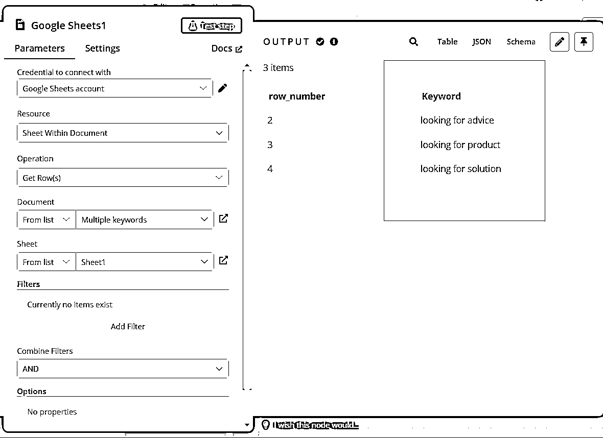
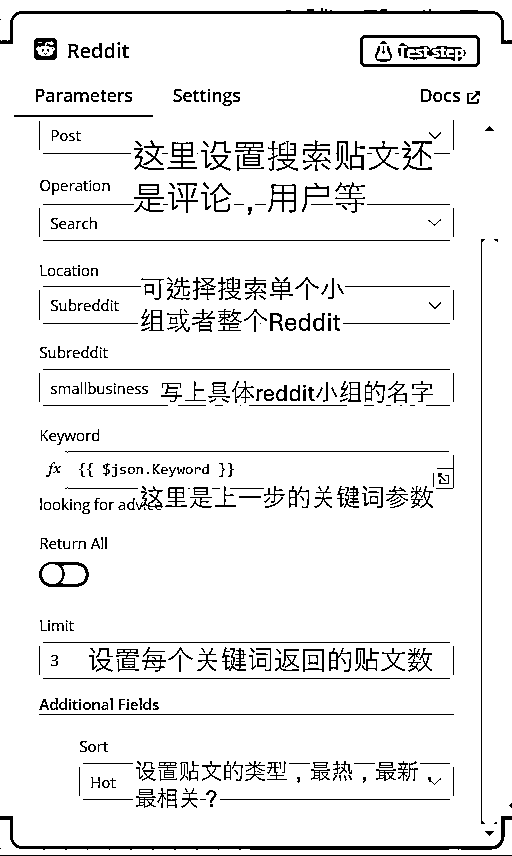
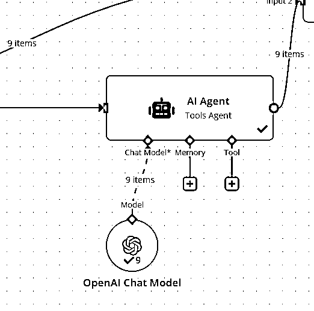
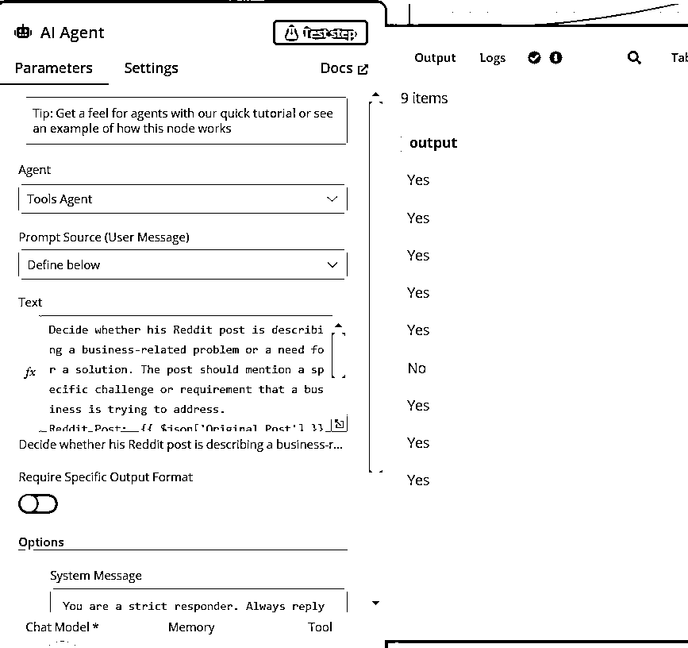
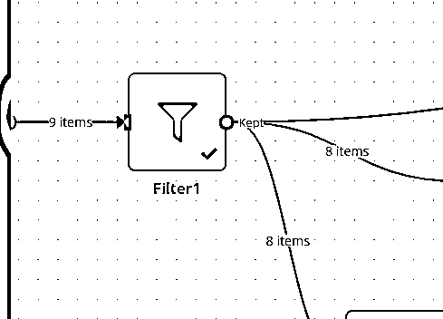
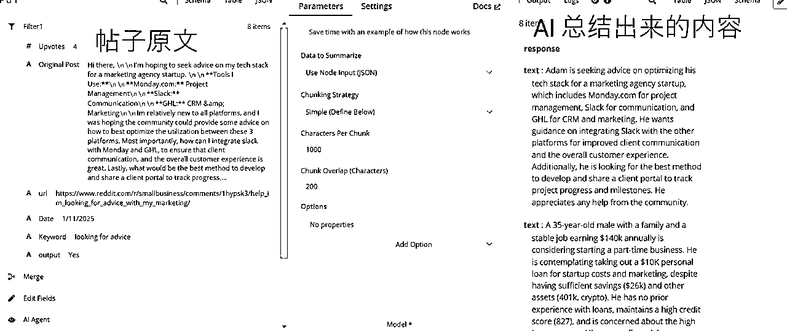
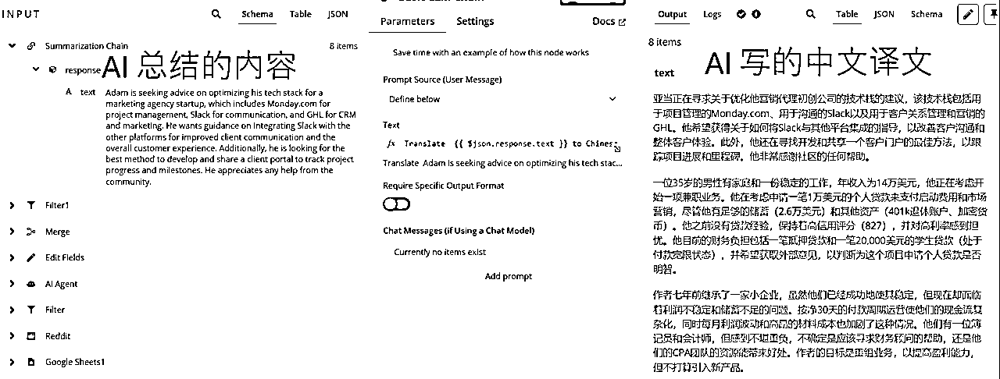
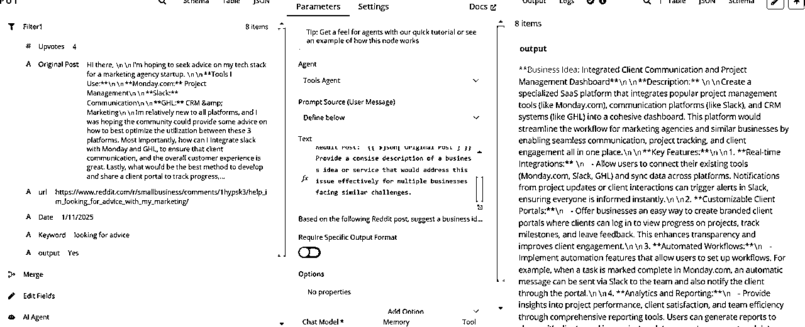
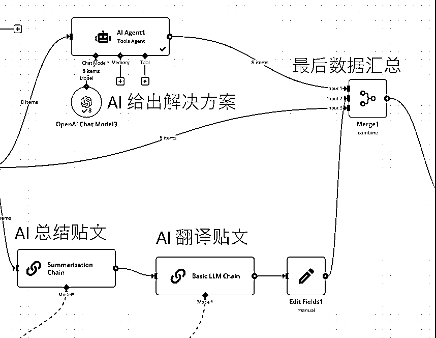
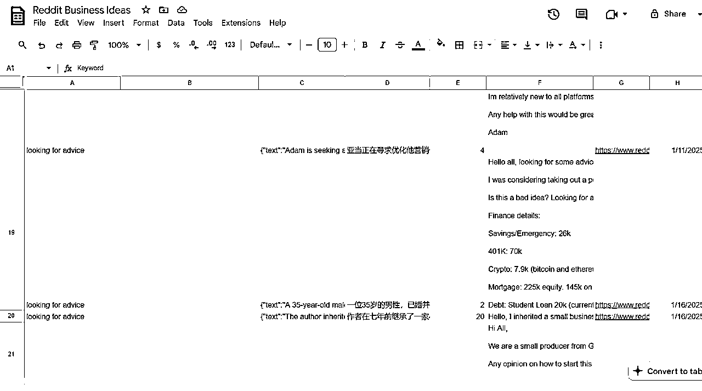

来源：https://zcnzawlx2ndr.feishu.cn/docx/AUxIdF9X0oYRQ4xvjoUcm0llnHd
大家，我是2024年10月加入生财大家庭的四喜，这是我第一次发帖分享，请大家多指教！
昨天看到亦仁大大的龙珠悬赏，决定把最近做的一个用于挖掘国外Reddit社区用户需求的AI Agent 分享出来，也希望大神们给我一些反馈，让我继续成长！
为了方便展示，我给这个AI Agent 起了个名字叫 Reddit Agent
总的来说，Reddit里面有许多小社区（Subreddit），这些社区里面都是活人在参与讨论，寻求别人的意见，隐藏着很多真实的需求和痛点。我们知道，如果要开发一个app，作网站，或者跨境电商选品，找到用户未被解决的需求和痛点是很重要的一环，那么这些subreddit里面就藏着许多钻石等我们去挖掘。比如我们的花生圈友，就是从subreddit里面根据一个很无厘头的需求开始，最终开发出一个爆款app - 小猫补光灯。
之前圈友老彭也发了一篇Reddit 扫盲贴，写得非常详尽，有兴趣的圈友可以参考。
这个可以看作是一个AI Agent，也可以看作是一个AI工作流，它能实现的事情是：
第一步：根据指定的关键词，在指定的subreddit小组内搜索含有关键词的帖文
第二步：根据设定好的条件过滤贴文
第三步：让大模型对贴文内容进行分析，分析出哪些贴文是与业务需求相关的。返回答案：Yes / No
第四步：过滤掉与业务需求无关的帖子
第五步：让大模型总结每个贴文的内容；把每个贴文翻译成中文；同时根据贴文内容给一个解决方案
第六步：把所有信息都存入Google Sheet
先把关键词存在一个文档里，我放了3个关键词



提示词：Decide whether his Reddit post is describing a business-related problem or a need for a solution. The post should mention a specific challenge or requirement that a business is trying to address.
Reddit Post: {{ $json['Original Post'] }}
## Output Format
Return Boolean output
If the answer is affirmative, return Yes, if the output is negative, return No
大模型返回结果：9个Yes, 1个No




AI 根据原贴文给出具体的Business Idea



第一次在社区发文，谢谢观看 ~